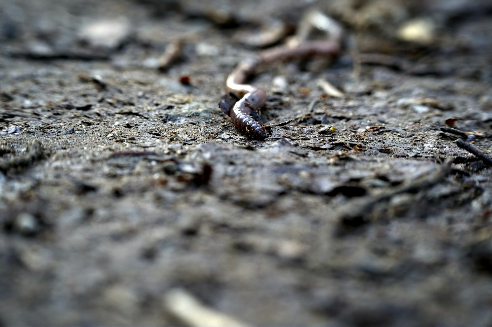
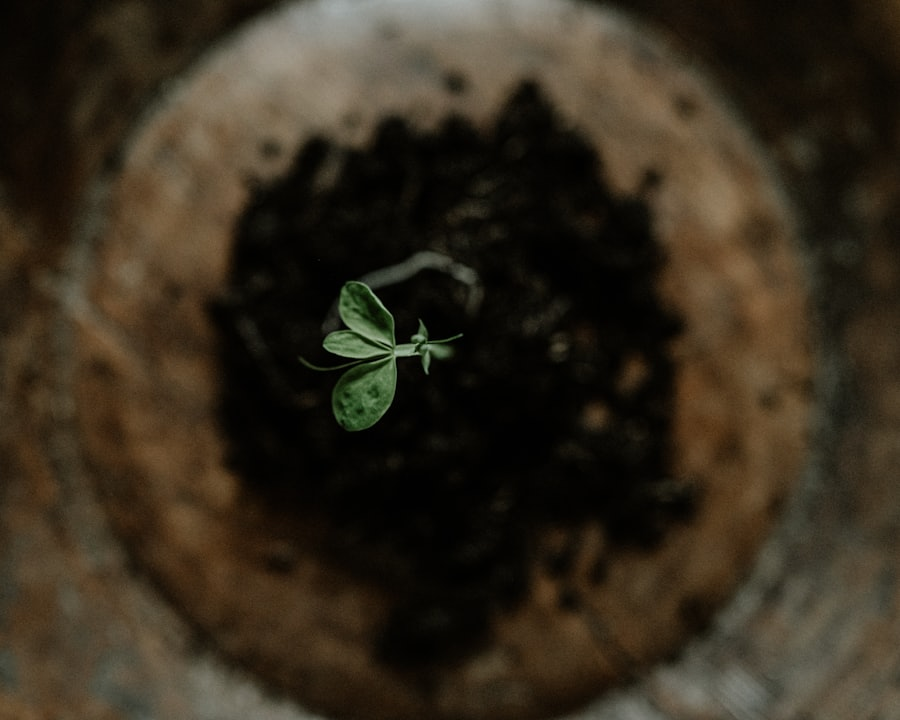

The spring wake-up
Why the bin slows in winter, and the three small adjustments that bring it back to life as the kitchen fills with peelings again.
The bin slows in winter. Worms are creatures of temperature, and below 50°F they draw down — eating less, breeding less, holding at the warm center of the tray and waiting out the cold. Nothing is wrong. The system is doing what it should. A digester is not a machine that runs at one speed; it is a population, and populations follow the weather more honestly than any thermostat.
The signs are easy to misread. Food sits longer. The trays feel heavier and a little wetter. The tap runs slow. A first-winter owner often reads this as failure and overcorrects — adding heat, adding food, turning the bedding — when the kinder response is patience. The worms have not left. They have gathered, a few inches down and toward the middle, where the mass of the bin holds its own faint warmth, and they are waiting for a reason to spread out again.

Three small adjustments
Spring asks three of them, and no more. The temptation in a warming kitchen is to do everything at once; the bin rewards restraint. Make the changes in order, a week apart, and watch how the trays answer before reaching for the next.
First, feed lighter for the first two weeks — a handful every few days rather than the summer cupful, until the population catches up with the warmth. A cold-thinned colony cannot process a full load, and uneaten food is what turns a balanced bin sour. Let the worms set the pace; when a feeding disappears in two days rather than five, the population has recovered enough to ask for more.
Second, check the moisture. A winter bin runs dry at the edges, where the air reaches it, while the center stays damp. The fix is a fresh coir brick, soaked and wrung to the wetness of a squeezed sponge, then worked into the top tray. Bedding is the carbon half of the system and the buffer that keeps the whole thing from tipping acidic — refresh it now and the spring feeding has somewhere to go.

Third, draw the tea. A season's worth has been gathering at the base; two liters, diluted half-and-half, is the first feed the garden wants. Drawn straight and undiluted it is too strong for tender spring roots — the half-and-half mark inside the watering can exists for exactly this. Pour it at the base of a pot rather than over the leaves, and the seedlings the compost will go on to raise get their start from the bin that made them.
By the time the kitchen fills with peelings again, the bin will have found its rhythm. The worms read the season faster than the calendar does — they were already turning toward spring while the trays still felt like winter. Trust the slow start. A digester brought back gently in April is the one still running easily in August.
— From the bench, OmniCompost